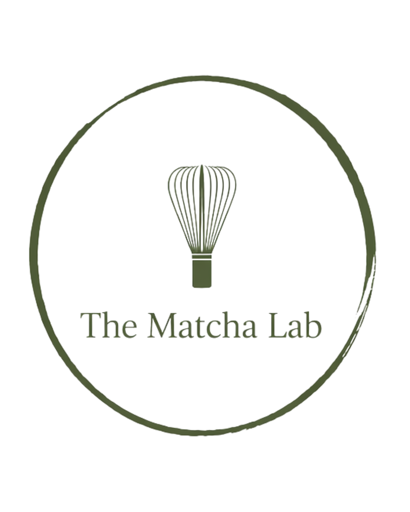

Our Menu
Discover handcrafted matcha drinks ranging from traditional favorites to seasonal creations.

AUTHENTIC JAPANESE MATCHA
Handcrafted Japanese matcha drinks made to bring tradition, quality, and community together.
Explore Our MenuThe Matcha Lab brings authentic Japanese matcha to the community through handcrafted drinks and pop-up experiences. Our goal is to make high-quality Japanese matcha approachable, enjoyable, and part of your everyday routine.
From traditional matcha lattes to creative drinks such as strawberry matcha, each drink is prepared with care and inspired by Japanese culture.
Explore our drinks, learn about Japanese matcha, and find The Matcha Lab at our next pop-up event.
Discover handcrafted matcha drinks ranging from traditional favorites to seasonal creations.
Learn about matcha's Japanese roots, preparation, and the traditions behind every cup.
Find out where The Matcha Lab will be serving matcha next and join us in person.